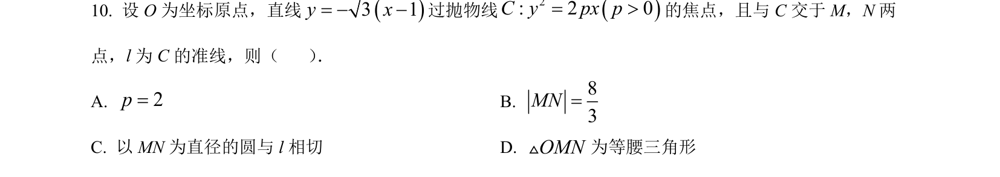
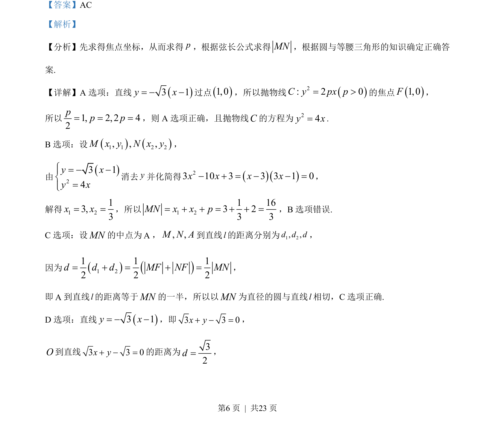
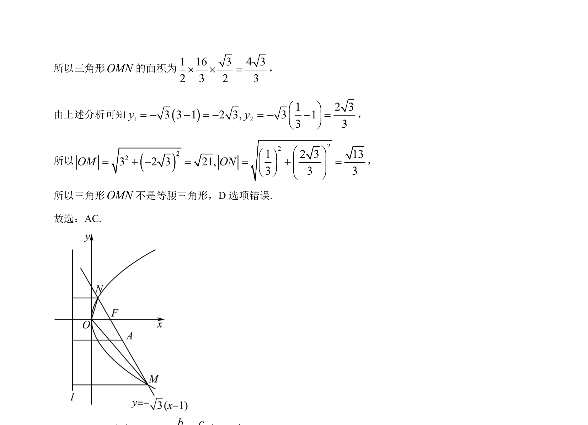

考点：抛物线焦点 弦长 直线与抛物线位置关系 圆的几何性质

抛物线焦点与弦长计算，结合圆与等腰三角形的几何性质判断选项正误


📄 原 PDF 第 6 页：
素材/真题/吉林/2008-2024·（吉林）数学高考真题/2023年高考数学试卷（新课标Ⅱ卷）（解析卷）.pdf
【答案】AC 【解析】 【分析】先求得焦点坐标，从而求得p，根据弦长公式求得MN，根据圆与等腰三角形的知识确定正确答 案. 【详解】A 选项：直线3 1y x= 过点1,0，所以抛物线2: 2 0C y px p= >的焦点1,0F， 所以1, 2, 2 42pp p= = =，则 A 选项正确，且抛物线C的方程为24y x=. B选项：设1 1 2 2, , ,M x y N x y， 由23 14y xy xì= ïí=ïî 消去y并化简得 23 10 3 3 3 1 0x x x x = =， 解得1 213,3x x= =，所以 1 21 163 23 3MN x x p= = =，B选项错误. C选项：设MN的中点为A，, ,M N A到直线l的距离分别为1 2, ,d d d， 因为1 21 1 12 2 2d d d MF NF MN= = =， 即A到直线l的距离等于MN的一半，所以以MN为直径的圆与直线l相切，C选项正确. D 选项：直线3 1y x= ，即3 3 0x y =， O到直线3 3 0x y =的距离为32d=，